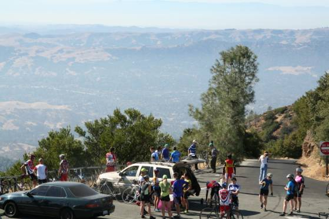

|
2006 Low-Key Hillclimbs Week 3 Results: Mt. Diablo 28 Oct 2006 |
|  |
| The superb Mt Diablo Summit, Low-Key style photo by Cara Coburn |
Low-Key made a $100 donation to the Mt Diablo Interpretive Association with proceeds from today's climb, which is in addition to the end-of-series donation which will go to the LAF and John Peckham fund. Thanks, everyone!
"So, who's the one to watch out for?" -- Diablo Park ranger, a Low-Key fan
"Petro Hizalev" -- your friendly coordinator
Gale force winds of the week previous stepped aside for warm sunshine and only the lightest summit breeze as the Low-Key Hillclimbs took on perhaps the Bay Area's best: the Mt Diablo Summit.
Less than 52 minutes after Sheri Greenspan blew the horn on the Golden Chariot to signal the start of today's climb, at the pull-out just past the northern gate, my words were proven true as Petro Hizalev of Webcor/Alto Velo reached the top of steep final slope to cross the line in an impressive 51:37, junior Menso de Jong of Santa Cruz Syndicate not far behind in 52:00.
Among the record 2006 women's field, Kate Ladan of TNT blitzed the hill with her stunning time of 62:57. An impressive total of 9 women reached the summit today.
Especially notable was the impressive feat of Nathan Hoover and his 14-year-old son Beau Hoover, each of Team Cyclops, who completed the climb on unicycles. Unicycles are making a strong impression at the Mt Diablo Challenge, and it was great to see them represented here. Beau Hoover was also the youngest Low-Keyer this year -- we hope to see more juniors in the future.
In the team competition, the ladies played a much larger role this week, with Velo Girls scoring a strong fifth overall. Western Wheelers was the top team on the day, followed by Stanford Cycling and Pen Velo/Kondra.
Next up: Highway 9, in Saratoga, an interlude, perhaps, between the magnitude of Diablo and the intensity of Bohlman. We hope to see you there!
Thanks to help from Barry Burr, Cara Coburn, Sheri Greenspan, Marsha, Leo Menestrina, and Meredith Nielsen for making today's climb possible!median time = 68:08
pl # rider team category time score 1 93 Petro Hizalev Webcor/Alto Velo 3 51:37 132.01 2 19 Menso de Jong Santa Cruz Syndicate Junior 52:00 131.04 3 31 Patrick Gordis Grizzly Peak Cyclists 40+ 53:13 128.05 4 26 Rick Martyn Pegasus 45+ 53:31 127.33 5 92 Matthew Catgo NSAID Fred 32.3 55:26 122.93 6 17 Brian Edwards Hell Riders 25-29 55:49 122.08 7 97 Greg McQuaid Western Wheelers 35+ 55:59 121.72 8 48 David Kelly Webcor/Alto Velo 4 56:06 121.46 9 20 James Porter Western Wheelers Out Of Shape Dads 57:01 119.51 10 55 Bob Rosemeyer Pegasus 40+ 58:26 116.61 11 16 Peter Mehlitz 45+ 59:01 115.46 12 40 Geo Kitta Pen Velo/Kondra 50+ 60:43 112.23 13 108 Jesse Czelusta Stanford Cycling 31+ 60:45 112.17 14 54 Justin Lucke Organic Athlete Vegan 61:16 111.22 15 109 Simon Haw Stanford Cycling South African 63:35 107.17 16 4 Fred E. Stamm Pen Velo/Kondra 50+ 64:45 105.24 17 29 Dean Larson Team Dino 40+ 64:53 105.02 18 6 Greg Dougald AV: Old Guys Finish 40+ 65:24 104.19 19 100 Oswaldo Orozco San Jose Bike Club Fat-And-Heavy 40+ 66:34 102.37 20 67 Martin Hyland Western Wheelers 50+ 67:03 101.63 21 70 Bob Parker AV: Old Guys Finish 50+ 67:23 101.13 22 21 Pete Heller AV: Old Guys Finish 50+ 67:47 100.53 23 32 Stefano Shiaffino 40+ 68:30 99.48 24 2 Kevin Winterfield Low-Key 69:24 98.19 25 99 Roberto St. Domingo San Jose Bike Club 50+ 70:40 96.43 26 101 Dave Johnson Stanford Cycling 20-24 70:45 96.31 27 34 Stephen Fong San Jose Bike Club 5 71:04 95.88 28 90 H. William Mirbach Pen Velo/Kondra 55+ 72:29 94.01 29 11 Peter Merril Adobe 50+ 72:34 93.90 30 105 Paul Sudano 58+ 72:47 93.62 31 64 Keith Devlin Team Devlin 59+ 73:47 92.35 32 94 Todd Benjamin 79:25 85.80 33 24 Alex Sousa Pen Velo/Kondra 5 81:23 83.73 34 53 Peter A. Pulido BBC 55+ 81:45 83.35 35 66 Eric Roodhouse SVTC 82:38 82.46 36 77 Jorge Chang Blubber Busters Infinity 82:46 82.33 37 25 Tim Porcival Pen Velo/Kondra 5 85:59 79.25 38 96 Jeff Namba L'Escargot 40+ 93:29 72.89 39 89 JT Conklin Identity Engines 35+ 94:33 72.07 40 49 Adam Tow Blubber Busters Infinity 94:47 71.89 41 91 Beau Hoover Team Cyclops Unicycle 107:11 63.57 42 60 Nathan Hoover Team Cyclops Unicycle 108:55 62.56 43 41 Kwan Low The Cutters 5 117:00 58.24 44 30 Christian Farlann L'Escargot 40+ 172:33 39.49
median time = 89:52
pl # rider team category time score 1 98 Kate Ladan TNT Open 62:57 142.76 2 56 Jennifer Barlan Hawks 74:51 120.06 3 68 Stephanie Gruszunski Velo Girls 86:22 104.05 4 107 Katie Antypas Velo Girls 25-29 88:33 101.49 5 95 Kelly Kasik 89:52 100.00 6 71 Marie Borselle Velo Girls 40+ 95:25 94.18 7 28 Colleen Cocoran Fast Chicks 25-29 99:23 90.42 8 106 Angela Liu Velo Girls 25-29 115:19 77.93 9 27 Christine Holmes Librarian 40+ 116:44 76.98
pl team score scoring 1 Western Wheelers 342.86 (Greg McQuaid, James Porter, Martin Hyland) 2 Stanford Cycling 315.65 (Jesse Czelusta, Simon Haw, Dave Johnson) 3 Pen Velo/Kondra 311.48 (Geo Kitta, Fred E. Stamm, H. William Mirbach) 4 AV: Old Guys Finish 305.85 (Greg Dougald, Bob Parker, Pete Heller) 5 Velo Girls 299.72 (Stephanie Gruszunski, Katie Antypas, Marie Borselle) 6 San Jose Bike Club 294.68 (Oswaldo Orozco, Roberto St. Domingo, Stephen Fong) 7 Webcor/Alto Velo 253.48 (Petro Hizalev, David Kelly) 8 Pegasus 243.94 (Rick Martyn, Bob Rosemeyer) 9 Blubber Busters 154.22 (Jorge Chang, Adam Tow) 10 TNT 142.76 (Kate Ladan) 11 Santa Cruz Syndicate 131.04 (Menso de Jong) 12 Grizzly Peak Cyclists 128.05 (Patrick Gordis) 13 Team Cyclops 126.14 (Beau Hoover, Nathan Hoover) 14 NSAID Fred 122.93 (Matthew Catgo) 15 Hell Riders 122.08 (Brian Edwards) 16 Hawks 120.06 (Jennifer Barlan) 17 L'Escargot 112.38 (Jeff Namba, Christian Farlann) 18 Organic Athlete 111.22 (Justin Lucke) 19 Team Dino 105.02 (Dean Larson) 20 Low-Key 98.19 (Kevin Winterfield) 21 Adobe 93.90 (Peter Merril) 22 Team Devlin 92.35 (Keith Devlin) 23 Fast Chicks 90.42 (Colleen Cocoran) 24 BBC 83.35 (Peter A. Pulido) 25 SVTC 82.46 (Eric Roodhouse) 26 Librarian 76.98 (Christine Holmes) 27 Identity Engines 72.07 (JT Conklin) 28 The Cutters 58.24 (Kwan Low)